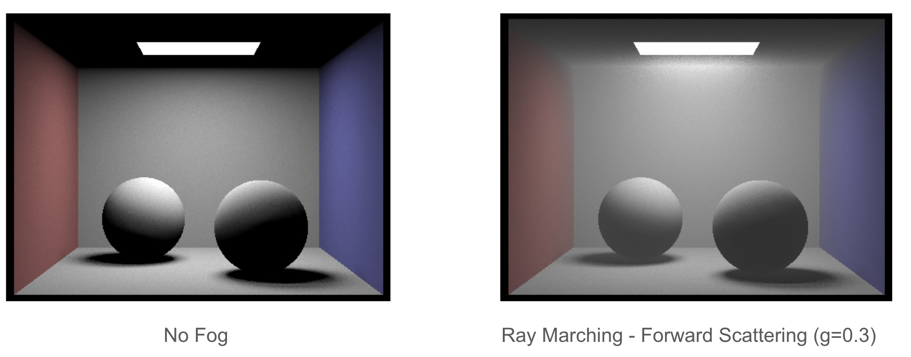
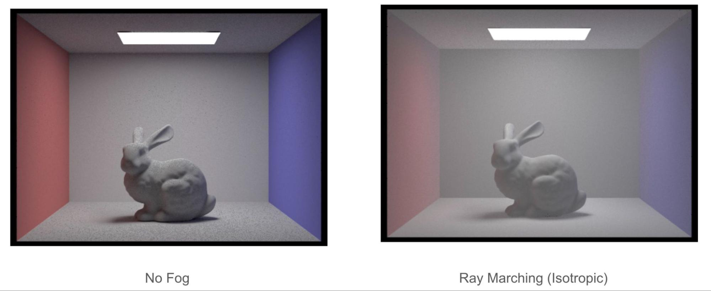

Results
Light Beam
So far, we have accomplished giving the spot light a variable sample based on a provided tag in the CLI or an adjustment in the GUI. Use the tag -v in the CLI and the default GUI will have a picker right setter right below the area light option and we can use the x and v keys to increment our samples or z and c to decrement our samples. A big issue that was not caught earlier was how the parser interprets .dae files. Turns out, exporting a .dae file in blender versions greater than 3 have an incompatible format to the current .dae files in the homework 3. This leads to a black picture and no meshes intersected. To avoid this, we replaced the area light of CBBunny.dae with a spot light to emit a light beam in Blender greater than 3, exported the collada, then re-imported and re-exported in v2.7 to match the .dae parsing format in homework 3. However, the re-export does not appear the same as the original when rendered in our renderer.
Ray Marching
Our first implementation of rendering homogenous fog was through forward ray marching using single scattering where we march through the scene in small regular steps forward for a certain number of time steps. We accumulate the direct light at each point to obtain the in-scattered light. We applied the Beer Lambert’s Law to obtain the attenuation of light from the light source to our current point. To accurately produce out-scattering, we introduce two coefficients and  representing the scattering and absorption coefficients with representing the overall extinction coefficient. Just like how we use BSDFs for surface interactions, for media interactions we use a Phase Function since the outgoing direction can now be scattered in all directions vs just the hemisphere of directions in surface interactions.
representing the scattering and absorption coefficients with representing the overall extinction coefficient. Just like how we use BSDFs for surface interactions, for media interactions we use a Phase Function since the outgoing direction can now be scattered in all directions vs just the hemisphere of directions in surface interactions.
Presentation
Presentation Video
Presentation Slides
Future Work
- Moving forward, we anticipate implementing the light beam and incorporate it with a fine tuned fog generator.
- We are aiming to fine-tune our current ray marching algorithm including absorption
- Our final goal is to render a Heterogeneous medium (hopefully a cloud) using 3D grids of densities.
- Potentially implement multi scattering as light rays interact with multiple particles in the medium before we see the ray.
- Introduce different Phase functions depending on the different types of mediums we want to render
- Refine light beam rendering sample function, remove ns_area functionality since spot doesn't require it